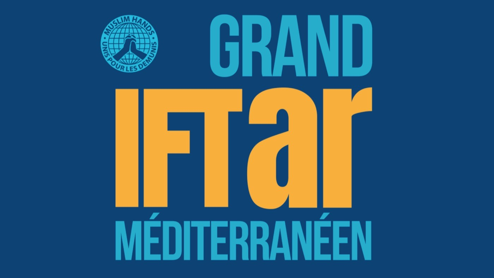

Lyon
Maraudes à la Part-Dieu deux soirs par semaine, accompagnement de 175 mineurs non accompagnés, opération Back to School à la rentrée.
Nos actions à LyonTrois soirs par semaine, nos bénévoles partent du siège de Saint-Ouen avec des repas chauds, des boissons chaudes et des kits d'hygiène, et vont à la rencontre des personnes qui dorment autour de la gare du Nord, de la porte de la Chapelle, sur les quais de Seine et dans les campements de fortune près de l'Hôtel de Ville. L'hiver, les sacs se remplissent de duvets, de bonnets et de gants : c'est la campagne hiver, du 2 novembre au 28 février, pendant laquelle 150 kits hiver ont été distribués en un mois à l'hiver 2024.
Depuis février 2024, Yasin, coordinateur Île-de-France, structure ces maraudes autour d'une règle : la proximité et l'écoute. Un repas, oui, mais aussi un visage connu, une coupe de cheveux, une orientation vers un hébergement ou un service de santé quand la personne le souhaite. Toute l'année, l'antenne distribue aussi des colis alimentaires aux familles d'Île-de-France en difficulté.

20 € vous coûtent 5 € après réduction d'impôt de 75 %.
Je soutiens ParisDispositif Coluche : 75 % jusqu'à 2 000 €, puis 66 % · reçu fiscal immédiat
Au fil des maraudes, nos équipes rencontrent des adolescents arrivés seuls en France, pour la plupart d'Afrique de l'Ouest, après un périple à travers le Sahara et la Méditerranée. Sans abri ni statut, ils survivent grâce aux associations en attendant la reconnaissance de leur minorité. Nos bénévoles leur apportent des repas, des kits d'hygiène et des vêtements, les orientent vers les structures spécialisées et les accompagnent dans leurs démarches, en lien avec l'antenne de Lyon qui suit 175 de ces jeunes.
À la rentrée, l'opération Back to School, menée à Paris et à Lyon, remet aux enfants des familles suivies un cartable et des fournitures pour que l'année commence comme pour les autres.

Chaque soir du Ramadan, nos bénévoles servent des iftars aux personnes isolées et sans abri dans nos locaux de Saint-Ouen et en distribuent dans les rues de Paris : 1 560 repas et 50 colis alimentaires, l'équivalent d'un mois de courses pour une famille, ont été offerts en 2024, avec deux jours de distribution par semaine. La fidya et la kaffara financent ensuite 3 445 repas sur trois mois. À l'Aïd al-Adha, 200 repas ont été partagés à Nanterre avec notre partenaire Authenti-Cité et de la viande distribuée à 72 familles. Le fonds Ramadan et la zakat al fitr collectée en France financent ces repas.

| Don | Ce qu'il permet | Coût après impôt | Fiche |
|---|---|---|---|
| 5 € | Un repas chaud et une boisson chaude distribués en maraude | 1,25 € | Donner |
| 20 € | Quatre repas, ou un kit d'hygiène complet | 5 € | Donner |
| 50 € | Un colis alimentaire, l'équivalent d'un mois de courses pour une famille | 12,50 € | Donner |
| 100 € | Une soirée de maraude complète : vingt repas, boissons et kits pour trois bénévoles | 25 € | Donner |
| 30 € | Un colis chaleur pour une personne sans abri (hiver) | 7,50 € | Donner |
Les dons qui financent la fourniture gratuite de repas, de soins ou d'un hébergement aux personnes en difficulté bénéficient du dispositif « Coluche » : 75 % de réduction d'impôt jusqu'à 2 000 € par an, puis 66 % au-delà. Les maraudes, les colis alimentaires, les iftars solidaires et l'accompagnement des mineurs non accompagnés y sont éligibles. 20 € vous coûtent 5 €, 100 € vous coûtent 25 €. Le reçu fiscal est envoyé par e-mail immédiatement après le don. Comprendre les deux taux et simuler mon don.

Distribués en un mois pour protéger les sans-abri du froid, hiver 2024.
Distribués en trois mois grâce à la fidya et la kaffara collectées pendant le Ramadan.
Et 50 colis alimentaires offerts pendant le Ramadan, deux jours de distribution par semaine.
Ont reçu de la viande à l'Aïd al-Adha, et 200 repas ont été partagés à Nanterre avec Authenti-Cité.
Maraudes, distributions, coupes de cheveux, iftars : une équipe d'Île-de-France.
Tournoi solidaire qui réunit chaque année les jeunes des quartiers autour de nos actions.
Les comptes de nos actions en France sont publiés chaque année dans le rapport annuel.

« Les quais, la nuit, on n'existe pour personne. Eux, ils reviennent chaque semaine, ils connaissent mon prénom. Le café chaud, c'est le prétexte. »Michel, rencontré en maraude sur les quais de Seine, hiver 2024

Maraudes, préparation des colis, cours de français, inclusion numérique, accompagnement administratif, logistique, traduction : il y a une place pour chacun, une heure par semaine ou une fois par mois. Aucune compétence n'est requise ; une réunion d'accueil a lieu chaque mois. Laissez-nous vos coordonnées, l'équipe de Paris vous recontacte sous une semaine.
Des maraudes trois soirs par semaine autour de la gare du Nord, de la porte de la Chapelle et des quais de Seine, des distributions de repas et de colis alimentaires, des coupes de cheveux et des kits d'hygiène, les colis chaleur de la campagne hiver, les iftars solidaires du Ramadan au siège de Saint-Ouen et l'accompagnement des mineurs non accompagnés.
Bâtiment Energy 2, 155 rue du Docteur Bauer, 93400 Saint-Ouen-sur-Seine, à deux pas de Paris. C'est là que sont préparés les colis, servis les iftars solidaires et accueillis les nouveaux bénévoles. Téléphone : 01 49 48 05 05.
Les dons qui financent la fourniture gratuite de repas et l'aide aux personnes en difficulté bénéficient du dispositif « Coluche » : 75 % de réduction d'impôt jusqu'à 2 000 € par an, puis 66 %. Les maraudes, les colis et les iftars de Paris y sont éligibles. 20 € vous coûtent 5 €.
Remplissez le formulaire de cette page ou appelez le 01 49 48 05 05. Plus de 100 bénévoles participent déjà aux maraudes, aux distributions et aux iftars. Une heure par semaine ou une fois par mois, sans compétence requise ; une réunion d'accueil a lieu chaque mois au siège de Saint-Ouen.
Oui, au siège de Saint-Ouen aux heures de bureau, propres et en bon état : duvets, bonnets, gants, chaussettes neuves, produits d'hygiène, denrées sèches non ouvertes. Les besoins du moment sont indiqués dans la lettre mensuelle.
Oui. À Lyon : maraudes à la Part-Dieu et accompagnement de 175 mineurs non accompagnés. À Marseille : La Fourchette Fraternelle, notre restaurant solidaire, sert des repas chauds à table du lundi au vendredi.